1072D10 modular inlet manifold - r+r
- Path
- Procedures > 10 ENGINE > 1072 INLET AND EXHAUST MANIFOLDS > 1072D modular inlet manifold (v.i.s.) > 1072D10 modular inlet manifold - r+r
- Kind
- repair procedure (removal / refitting; the operation number is the code)
- Applies to
- engines: 2.0 TS; all production periods
- Interactive page
- https://sloeber94.github.io/elrnDB-a147/en/#/3024935
Applies to: engines: 2.0 TS; all production periods
 Removing
Removing
 Refitting
RefittingPosition the vehicle on the ramp.
Ensure that the ignition key is in the OFF postition, then disconnect the battery negative terminal.
 | Name | Connector |
|---|---|---|
- | Battery |
Proceed with the removal 7055B54 under-engine guard - r r .
1. Undo the bolt fixing the mounting bracket to the modular intake manifold.
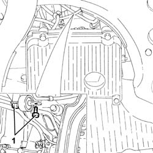
Applies to: engines: 2.0 TS; all production periods
Proceed with the removal 1016A40 ignition coil cover on cylinder head- r+r .
1. Disconnect the electrical connection from the air flow meter.
| Name | Connector |
|---|---|---|
1 | Air flow meter |
Release the electrical wiring for the air flow meter from the fastening on the air intake hose.
2. Disconnect the air intake hose from the filter.
3. Disconnect the oil vapour recovery pipes from the tappet cover.
4. Disconnect the air inlet hose from the throttle casing integrated with the D.V.L.
5. Remove the air intake hose (5a), complete with air flow meter (5b) and oil vapour recovery pipe (5c).
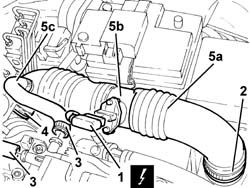
Applies to: engines: 2.0 TS; all production periods
Proceed with the removal 1056B60 single fuel manifold pipe, with injectors - r + r .
1. Disconnect the electrical connection from the engine coolant temperature sensor.
| Name | Connector |
|---|---|---|
1 | Engine temperature sender unit |
2. Undo nut (2a) and disconnect earth lead (2b) from the intake manifold.
| Name | Connector |
|---|---|---|
2b | Earth on engine |
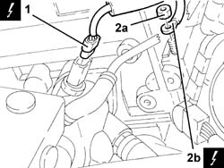
Applies to: engines: 2.0 TS; all production periods
1. Disconnect the electrical connection from the throttle casing integrated with D.V.L. and release the wiring from the band.
| Name | Connector |
|---|---|---|
1 | Throttle body actuator |
2. Disconnect the electrical connections (2a) and (2b) from the injection/ignition control unit.
| Name | Connector |
|---|---|---|
2a | Engine management ECU |
| Name | Connector |
|---|---|---|
2b | Engine management ECU |
3. Undo the bolt (3a) and disconnect the earth lead (3b) from the injection/ignition control unit mounting.
| Name | Connector |
|---|---|---|
3b | Earth on engine |
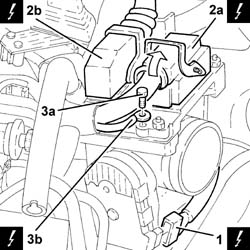
Applies to: engines: 2.0 TS; all production periods
1. Disconnect the engine front connection.
| Name | Connector |
|---|---|---|
1 | Front / engine coupling |
2. Disconnect the electrical connection for the rpm sensor.
| Name | Connector |
|---|---|---|
2 | RPM sensor |
3. Disconnect the electrical connection for the detonation sensor.
| Name | Connector |
|---|---|---|
3 | Detonation sensor - 1 |
4. Disconnect the electrical connection for the Lambda sensor.
| Name | Connector |
|---|---|---|
4 | Lambda sensor downstream of post-catalyzer |
5. Disconnect the electrical connection for the cam angle sensor.
| Name | Connector |
|---|---|---|
5 | Timing sensor. |
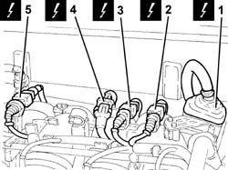
Applies to: engines: 2.0 TS; all production periods
1. Disconnect the electrical connection from the enablement solenoid of the changeover device actuator.
| Name | Connector |
|---|---|---|
1 | Variable geometry control solenoid |
Release the electrical wiring from the modular intake manifold.
2. Disconnect the rapid attachment coupling for the fuel vapour recovery pipe.
3. Release the fuel vapour recovery pipe from the fastening on the power assisted steering fluid reservoir.
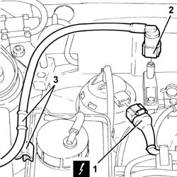
Applies to: engines: 2.0 TS; all production periods
1. Undo the bolts (1a) and remove the power assisted steering fluid reservoir (1b) without disconnecting the pipes.
2. Disconnect the coolant return pipe to the engine coolant reservoir, reservoir side.
3. Release the coolant return pipe to the coolant reservoir from the fastenings on the modular intake manifold and move it aside.
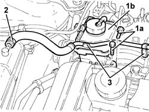
Applies to: engines: 2.0 TS; all production periods
1. Undo the bolts (1a) and remove the mounting (1b), complete with injection/ignition control unit (1c).
2. Undo the remaining bolt (2a) and remove the throttle casing integrated with D.V.L. (2b) .
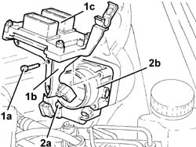
Applies to: engines: 2.0 TS; all production periods
1. Disconnect the brake servo vacuum pipe from the modular intake manifold.
2. Disconnect the electrical connection from the fuel vapour solenoid valve.
| Name | Connector |
|---|---|---|
2 | Fuel vapour recovery solenoid |
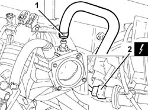
Applies to: engines: 2.0 TS; all production periods
1. Loosen the bands securing the hoses to the intake manifold.
2. Undo the bolts (2a) and remove the modular intake manifold (2b) after having released the electrical wiring from the fastenings.
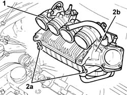
Applies to: engines: 2.0 TS; all production periods
Refitting
RemovingPlace the modular intake manifold back in its housing and secure it using the bolts.
Tightening the bands securing the hoses to the intake manifold.
Connect the electrical connection to the fuel vapour solenoid valve.
Connect the brake servo vacuum pipe to the single-acting valve.
1. Place the throttle casing integrated with D.V.L. (1a) back in its housing and fasten it temporarily using the bolt (1b).
2. Place the mounting (2a), complete with injection/ignition control unit (2b), back in its housing and secure it by tightening the bolts (2c) to the recommended torque.
 | Fastening | Component | Ø | Value (daNm) |
|---|---|---|---|---|
2c | Bolt | BUTTERFLY VALVE CASE/S (MPI) | M6 | (Modular intake manifold side) 0.8 ÷ 1.1 |
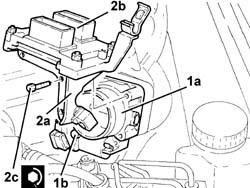
Applies to: engines: 2.0 TS; all production periods
Place the coolant return pipe to the engine cooling system reservoir back in its housing and secure it using the bands on the air chamber.
Connect the coolant return pipe to the engine coolant reservoir.
Refit in its seating the power steering fluid reservoir and secure it with its bolts.
Connect the rapid attachment for the fuel vapour recovery pipe.
Secure the fuel vapour recovery pipe using the band to the power assisted steering fluid reservoir.
Connect the electrical connection from the enablement solenoid of the changeover device actuator.
Connect the electrical connection for the cam angle sensor.
Connect the electrical connection for the Lambda sensor.
Connect the electrical connection for the detonation sensor.
Connect the electrical connection for the rpm sensor.
Connect the engine front coupling.
Connect the earth lead to the injection / ignition control unit mount and secure it with its bolt.
Connect the electrical connections to the injection-ignition control unit.
Connect the electrical connection to the butterfly casing integrated with D.V.L. and fix the wiring to the band.
Connect the earth lead to the intake manifold and secure it using the nut.
Connect the electrical connection to the engine coolant temperature sensor.
Fasten the electrical wiring to the modular intake manifold.
Proceed with the refitting 1056B60 single fuel manifold pipe, with injectors - r + r .
Place the air intake hose, complete with air flow meter, back in its housing and connect it to the air filter and to the throttle casing integrated with D.V.L.
Connect the oil vapour recovery pipes to the tappet cover.
Connect the electrical connection for the air flow meter and fasten the wiring to the air intake hose.
Proceed with the refitting 1016A40 ignition coil cover on cylinder head- r+r .
Tighten the bolts fixing the mounting bracket to the modular intake manifold.
Proceed with the refitting 7055B54 under-engine guard - r r .
Connect the battery terminal (-).
Remove the car from the ramp.
Topics linked from this page (18)
- 1016A40 ignition coil cover on cylinder head- r+r
- 1056B60 single fuel manifold pipe, with injectors - r + r
- 7055B54 under-engine guard - r r
- A1B Battery ( Connectors )
- C40A Earth on engine ( ENGINE )
- C40C Earth on engine ( ENGINE )
- D4 Front / engine coupling
- K17 Lambda sensor downstream of post-catalyzer
- K36 Engine temperature sender unit
- K41 Air flow meter ( ENGINE )
- K46 RPM sensor
- K47 Timing sensor.
- K50 Detonation sensor - 1
- L10 Fuel vapour recovery solenoid
- L15 Variable geometry control solenoid
- M10A Engine management ECU ( Connectors )
- M10B Engine management ECU ( ENGINE )
- N75 Throttle body actuator
Topics that link to this page (6)
- 1016C10 cylinder head - r + r and replace gasket
- 1028H10 connecting rod and piston set - r r
- 1072B10 inlet manifold - r + r and replace seal
- 1080E28 enablement solenoid for flow of fuel vapour to inlet - r+r
- 1080E63 Fuel vapour PIPE from INTERMEDIATE COUPLING to fuel vapour SOLENOID VALVE - R.R.
- 1820B20 (Pump) - MASTER CYLINDER R.R.